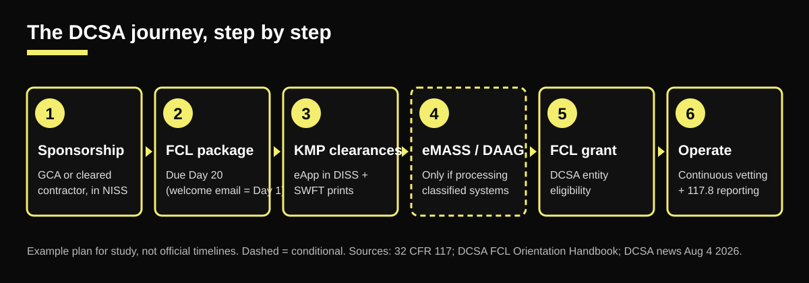
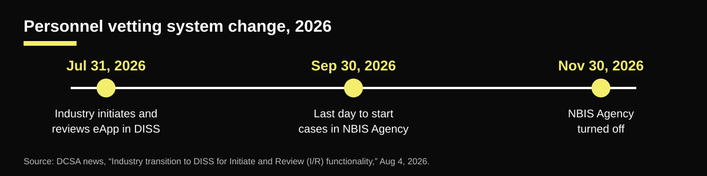

Phases at a glance
| Phase | Owner | Duration |
|---|---|---|
| 1. Sponsorship | Sponsor (GCA or currently cleared contractor); company provides info | Varies |
| 2. FCL package | Company: SMO, FSO, legal/corporate | Day 1 to Day 20 (welcome email = Day 1) |
| 3. KMP clearances (PCL) in DISS / eApp | DCSA initiates for initial FCL; KMPs complete eApp; FSO handles fingerprints | Due date set in DCSA's investigation email (varies) |
| 4. System authorization (only if possessing / processing classified) | FSO + ISSM; DCSA NCSO | Varies |
| 5. FCL grant | DCSA | Varies |
| 6. Operate: continuous vetting and reporting | FSO, ITPSO, all cleared staff | Ongoing |
Gantt-style view
1. Sponsorship
varies
2. FCL package (Day 1–20)
Day 1–20
3. KMP eApp + SWFT
email due date
FOCI mitigation (if needed)
varies
4. DAAG / eMASS (if possessing)
varies
5. FCL grant
varies
6. CV, reporting, 5-year PVQ
ongoing
Columns show order and overlap only. They are not to scale. Only the Day 1 to Day 20 package window has a fixed count in the sources S2. Dashed bars are conditional.

Phase 1: Sponsorship
Owner: Sponsor (GCA or currently cleared contractor); company provides info · Duration: Varies
- Confirm a classified contract need exists (a GCA or cleared prime has the requirement).
- Sponsor submits the FCL sponsorship in NISS. The company cannot sponsor itself S15 S2.
- DCSA accepts the sponsorship; the FSO receives the welcome email S2.
Decision point. Gate A: Is there a sponsor with a legitimate need? If no, stop. There is no self-sponsor path.
Phase 2: FCL package
Owner: Company: SMO, FSO, legal/corporate · Duration: Day 1 to Day 20 (welcome email = Day 1)
- Get NISS access and read the welcome email deadlines S2.
- Assemble the package: formation documents, ownership chart, DD Form 441, SF 328 (form approved May 2025), KMP list S2 S3 S4.
- Name KMPs by security-affecting authority (SMO, FSO, ITPSO at minimum), not by title S2.
- Submit the package in NISS by Day 20 S2.
Decision point. Gate B: Does SF 328 show foreign ownership, control or influence? If yes, add a FOCI mitigation track (duration varies) S24 S4.
Phase 3: KMP clearances (PCL) in DISS / eApp
Owner: DCSA initiates for initial FCL; KMPs complete eApp; FSO handles fingerprints · Duration: Due date set in DCSA's investigation email (varies)
- For the initial FCL, DCSA initiates KMP investigations; KMPs complete the SF-86 in eApp S2.
- Fingerprints go through SWFT by the same due date S25.
- Since Jul 31, 2026, industry initiates and reviews eApp cases in DISS; NBIS Agency stops new cases Sep 30 and turns off Nov 30, 2026 S16.
- Adjudication uses the 13 SEAD 4 guidelines S22.
Decision point. Gate C: Are all required KMPs eligible (or excluded by board resolution where allowed)? If not, the FCL waits S2.
Phase 4: System authorization (only if possessing / processing classified)
Owner: FSO + ISSM; DCSA NCSO · Duration: Varies
- Decide possessing vs. non-possessing. Non-possessing still needs cleared KMPs and an FSO S7.
- If classified systems are needed, follow the DAAG and submit RMF packages through NISP eMASS S13 S14.
- CMMC or GCC High do not substitute for an FCL or a classified ATO S18.
Decision point. Gate D: Will the company process classified information on its own systems? If no, skip this phase.
Phase 5: FCL grant
Owner: DCSA · Duration: Varies
- DCSA makes the entity eligibility determination once the package, KMP eligibility and any FOCI mitigation are complete S1 S2.
- Record status in NISS; keep the DD 441 and KMP list current S1.
Decision point. Gate E: Granted, or returned with deficiencies. A return restarts work on the gap, not the whole journey.
Phase 6: Operate: continuous vetting and reporting
Owner: FSO, ITPSO, all cleared staff · Duration: Ongoing
- Cleared people stay enrolled in continuous vetting S9.
- Periodic reinvestigations are no longer required for NISP contractors: submit an updated PVQ (SF-86 in eApp) every five years, timed from the PVQ Date in DISS S9.
- Report changed conditions and required events under 32 CFR 117.8 and SEAD 3 S20 S21.
- Run the insider threat program and annual self-inspection; complete required CDSE FSO training S1 S7 S8.
- If cleared staff only work at other sites, NAESOC may be the oversight office S23.
Decision point. Gate F: Any changed condition (ownership, KMP, address)? Report it and update NISS.